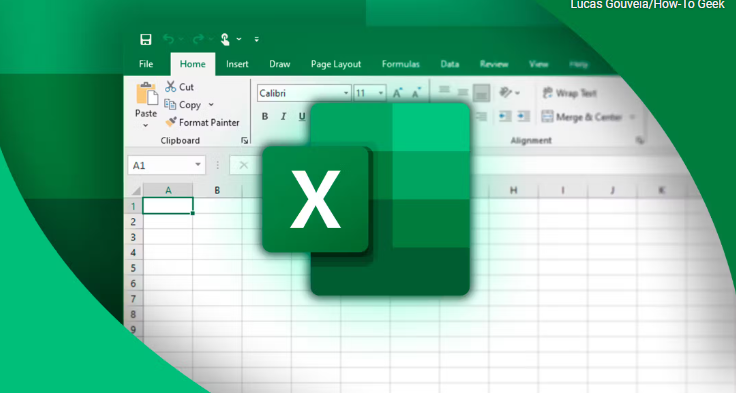
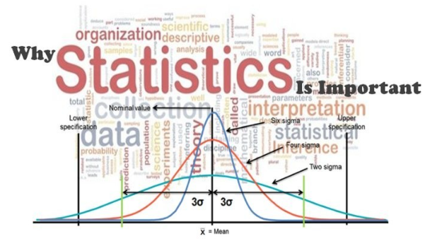

I have been a teacher my whole life. Started my teaching career in Japan, teaching English to kids and then got my Masters degree. Taught statistics for three years which was the turning point of my life. While teaching statistics I was amazed with how important data is in today's world.
You can almost say that with the correct data, you can literally solve all of your problem. I decided to analyze my students data using Excel and I was able to help my students pass their AP Statistics Exam and standardized tests like ACT/SAT.
I soon started learning about database tools like SQL and visualization tools like Tableau. I love working with data because it tells so much story depending on how you look at it and it gives a non-biased result which can be used to solve any problem as well as prevent future troubles.
My SQL portfolio highlights proficiency in data manipulation, querying, and visualization, with projects focused on complex queries, performance optimization, and dynamic reporting. Key examples include actionable insights from customer data, optimized database performance, and automated real-time dashboards, showcasing my ability to drive data-driven decision-making.
SQL Covid (Data Exploration)
SQL Nashville Housing (Data Cleaning)
SQL World Layoffs (Data Cleaning)
SQL World Life Expectanct (Data Exploration)
SQL Household Income (Data Cleaning)
SQL Household Income (Data Exploration)
SQL Superstore (Data Cleaning/Exploration)
SQL Walmart (Data Cleaning/Exploration)
SQL Pizza (Data Exploration)
SQL Bike Share (Data Exploration)
SQL Chocolate (Data Exploration)
SQL Coffee (Data Exploration)
SQL Retail Sales (Data Cleaning/Data Exploration)
SQL Human Resources (Data Cleaning/Data Exploration)
My Tableau portfolio demonstrates expertise in transforming complex datasets into actionable insights through dynamic visualizations and interactive dashboards. It includes projects showcasing advanced data blending and customized reports that support strategic decision-making.
Profit
Healthcare
Call Center
Sales
Churn Rate
Air BnB
CoVid

My Excel portfolio showcases advanced skills in data analysis and visualization, including complex formulas, pivot tables, and dynamic dashboards. Key projects involve automating reports, financial modeling, and interactive charts for effective decision-making.
US Debt Tracker
Bus Companies
Coffee
Call Center
Road Accident
My Python portfolio highlights expertise in data manipulation, automation, and analysis. It features projects involving scripting for data processing, developing machine learning models, and creating data-driven solutions. This portfolio demonstrates my ability to leverage Python for efficient and scalable data analytics.
Movies

My Power BI portfolio demonstrates expertise in creating interactive dashboards and reports that transform complex data into actionable insights. Key projects highlight data visualization, report automation, and dynamic analytics to support strategic decision-making.
Pizza
Call Center
Bike Data
SuperStore Sales
Hospital ER
Human Resources
Coffee
Chocolate

As a former statistics teacher transitioning to a new role, I bring a refined expertise in statistical concepts, enhanced pedagogical skills, and a proven ability to communicate complex ideas clearly. My experience enables me to develop engaging lessons, provide insightful data analysis, and foster a deeper understanding of statistics among students, preparing them for real-world applications.